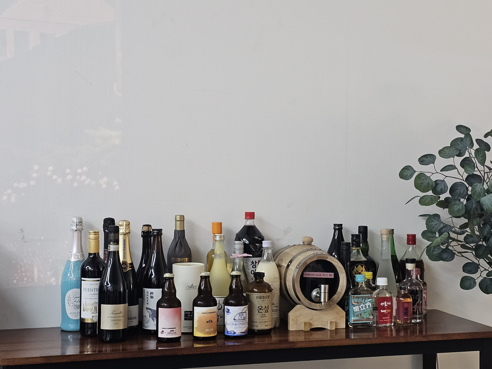
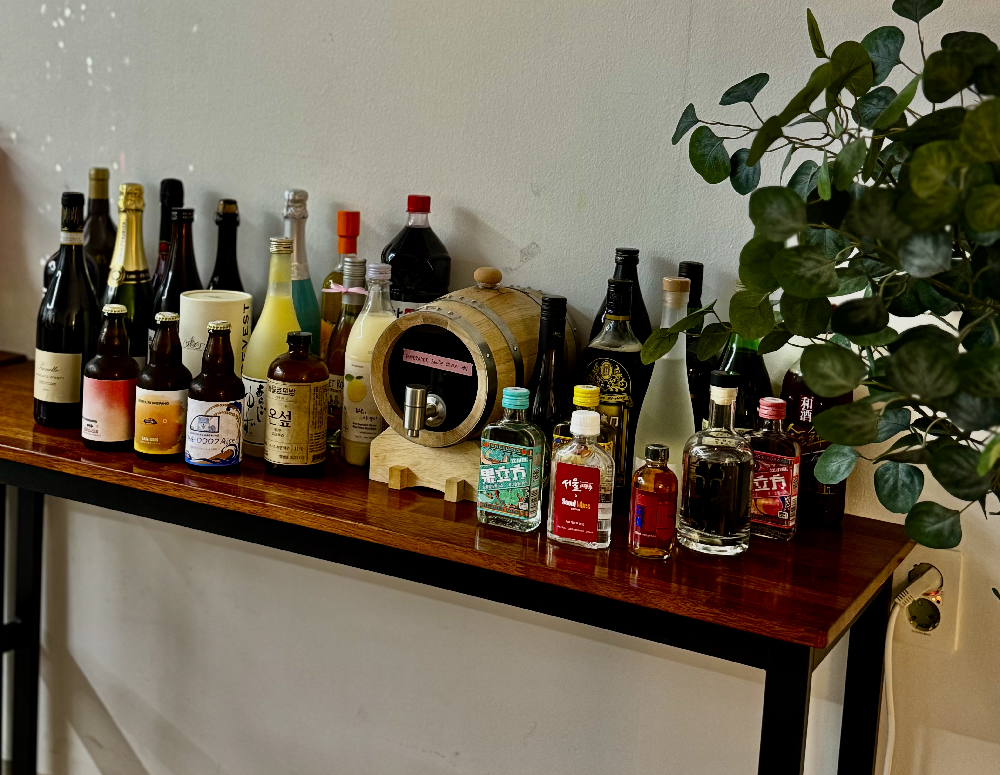
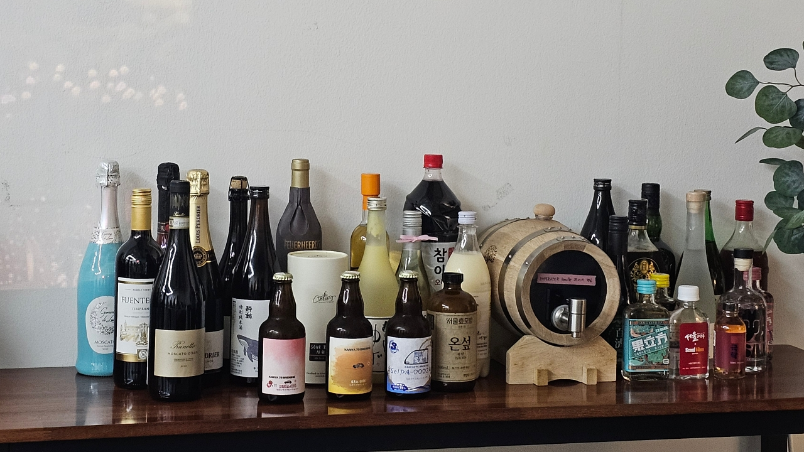
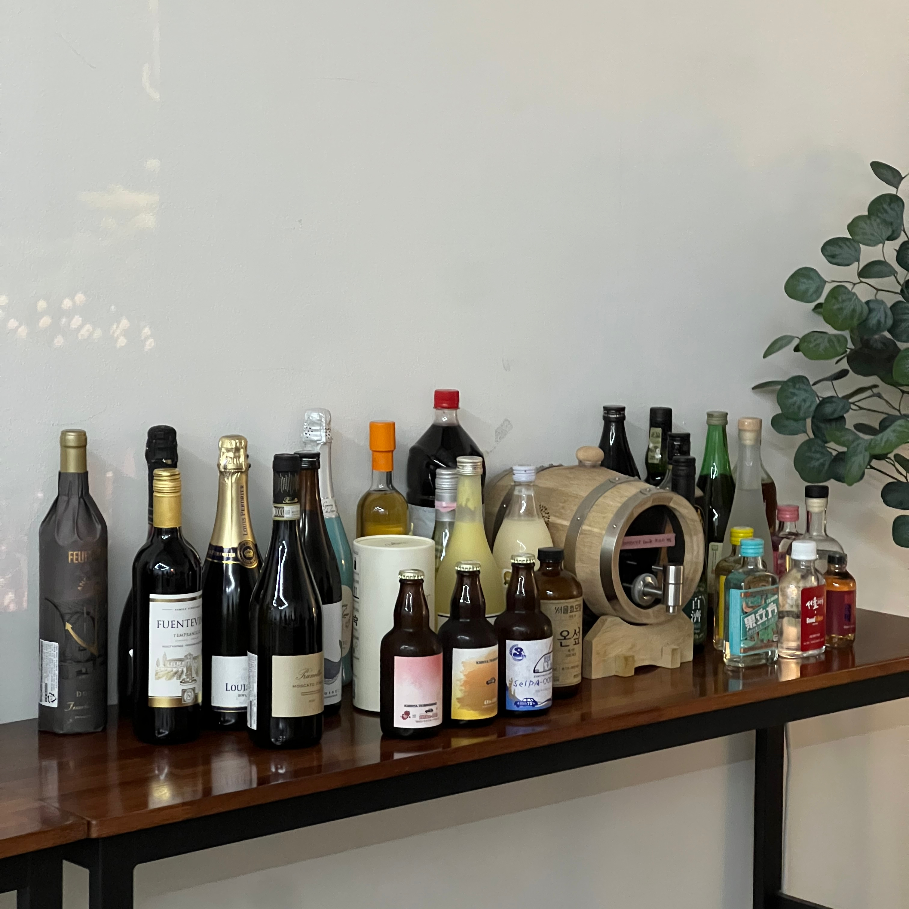
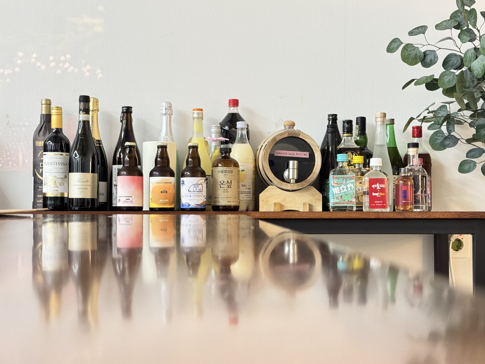
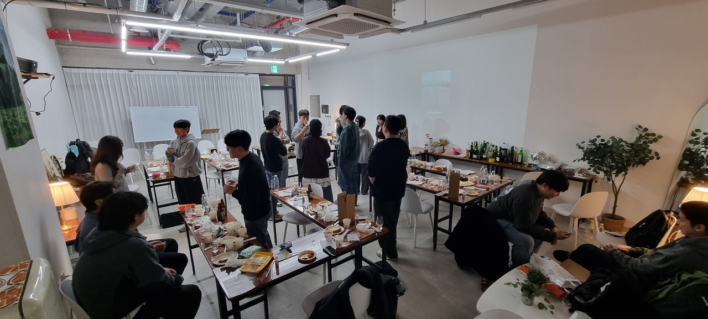
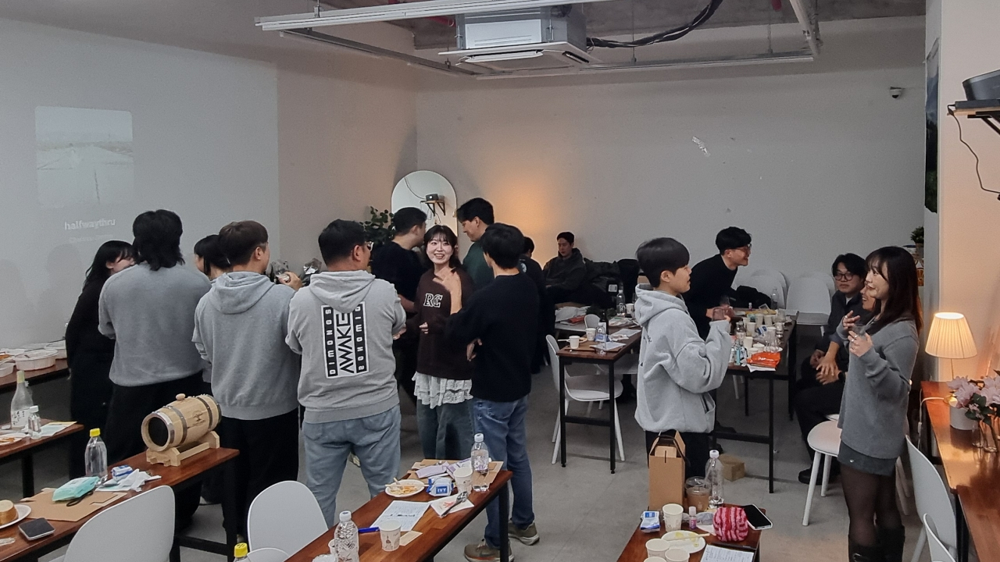
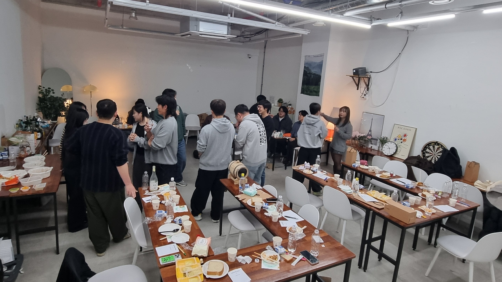
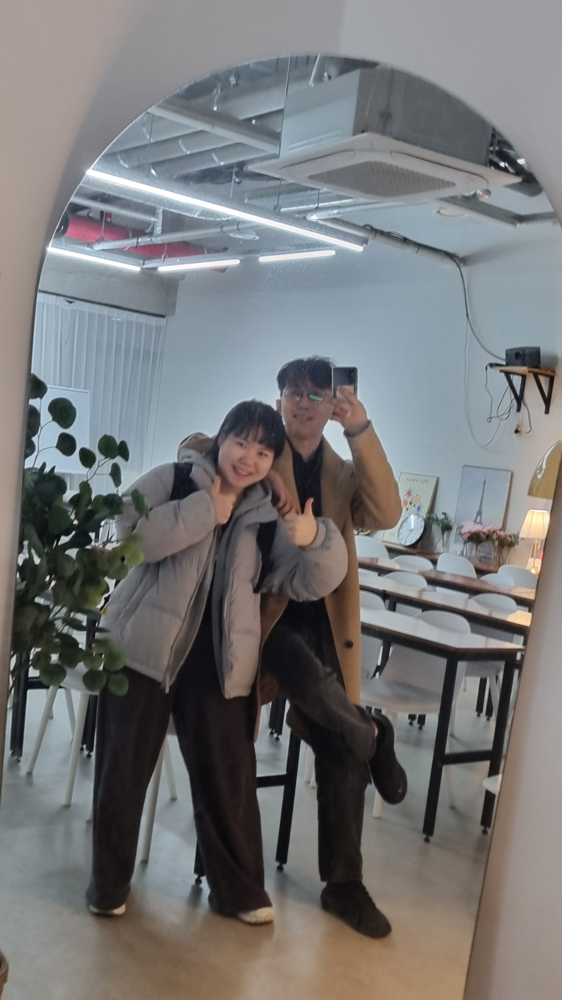

Volume Three · Tasting Notes
№03
2025년 11월 22일, 오후 6시 30분. 서울 강남역 인근의 세모네모에서 세 번째 술트럭파티가 열렸습니다. 호스트를 포함하여 18명의 참여자가 모였고, 시음 진행자를 제외한 17명이 평가에 참여했습니다. 참여자가 직접 가져온 주류는 중복을 제외해 총 33종이었으며, 이 중 1번부터 29번까지를 점수로 평가하고 30~33번은 이벤트 형식으로 시음했습니다.
점수는 0점부터 5점 사이에서 매겼습니다. 같은 술이 의도치 않게 두 번 시음되는 일도 있었는데(9번과 18번), 이는 같은 입맛이 같은 술에 어떻게 다른 점수를 매기는지 들여다볼 수 있는 작은 단서가 되었습니다.
1–29번을 0–5점으로 평가했고, 30–33번은 이벤트 형식으로 시음했습니다.





fig. 1 참여자들이 촬영한 시음 주류 사진
시음은 저도수 주류부터 시작해서 고도수 주류 순서로 진행되었습니다. 시음 1위는 Ardbeg Corryvreckan으로 3.95점, 저도수 부분에서는 BRICCO QUAGLIA MOSCATO D'ASTI가 3.86점으로 1위에 올랐습니다. 반면 중국 전통주인 황주 두 종과 한산 소곡주는 2점에 미치지 못하며 낯섦이 점수에 그대로 반영되었습니다.
술트럭파티를 참여할 정도로 술을 좋아하는 분들은 위스키를 좋아하는 성향이 있었습니다.”모든 위스키가 평균 이상의 점수를 받았고, 전통주와 와인은 비교적 편차가 있었습니다. 의도치 않게 두 번 시음된 Louis Perdrier Brut Excellence는 9번 3.02점, 18번 3.27점으로 비슷한 결을 보였습니다.



각 연령대 참여자의 평가만으로 산출했습니다. 전체 평균과는 다를 수 있습니다.
참여자 여러분 덕분에 파티가 한층 더 풍성해졌습니다.
“진행 전에 호스트와 함께 파티를 준비해주신 분”
“술트럭파티를 다시 찾아와 주신 분”
“예쁜 인증샷을 위해 참가용 술을 감각적으로 배치해주신 분”
“참가용 술에 얽힌 인상적인 스토리를 들려주신 분”
“쉽게 구할 수 없는 귀한 술을 가져와 주신 분”
“꼼꼼하게 시음 평가를 남겨주신 분”
“뒷풀이까지 텐션 높게 즐겨주신 분”
모두가 호스트를 도와주시고 함께 즐겨주신 덕분에
이번 파티를 열길 잘했다는 생각이 들었습니다.
2026년에도 또 한 번 술트럭 파티를 열고 싶어지네요.
어느덧 2025년도 한 달 정도만 남았네요.
건강하고 기분 좋은 한 잔과 함께 한 해 잘 마무리하시길 바랍니다. 감사합니다.
— 호스트 이지원, 손종국 —
